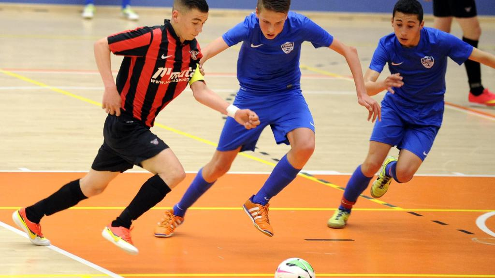

Hobby's en interesses
Ik vind zaalvoetbal gamen en darten wel leuk. Zaalvoetbal is een balsport waar je voetbalt in een zaal en niet op gras. Het veld/zaal is veel kleiner dan een voetbalveld en de wedstrijden zijn korter. Ik vind zaalvoetbal veel leuker dan veldvoetbal omdat je heel snel heen en weer moet op een korte afstand.
Ik vind gamen heel erg leuk om mijn vrije tijd mee te besteden ik speel meestal fortnite op mijn ps4 omdat ik daar heel erg goed in ben en omdat ik het leuk vind om met mijn vrienden te spelen.
Darten vind ik ook leuk om naar te kijken en speel soms ook in de buurthuis. Ik vind het leukste om darten te kijken op tv omdat daar bijna alle professionals spelen.